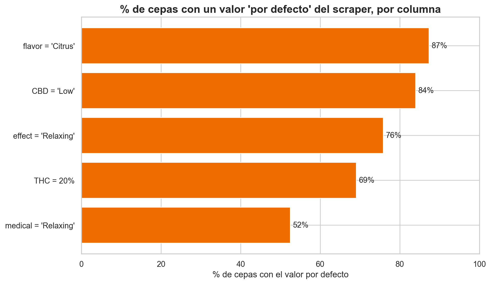
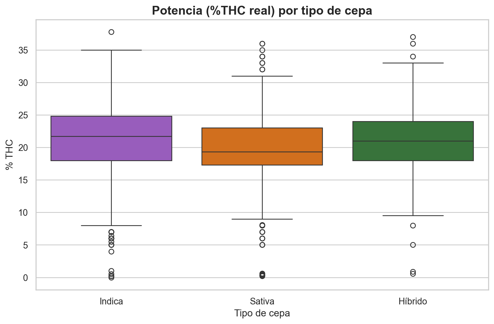
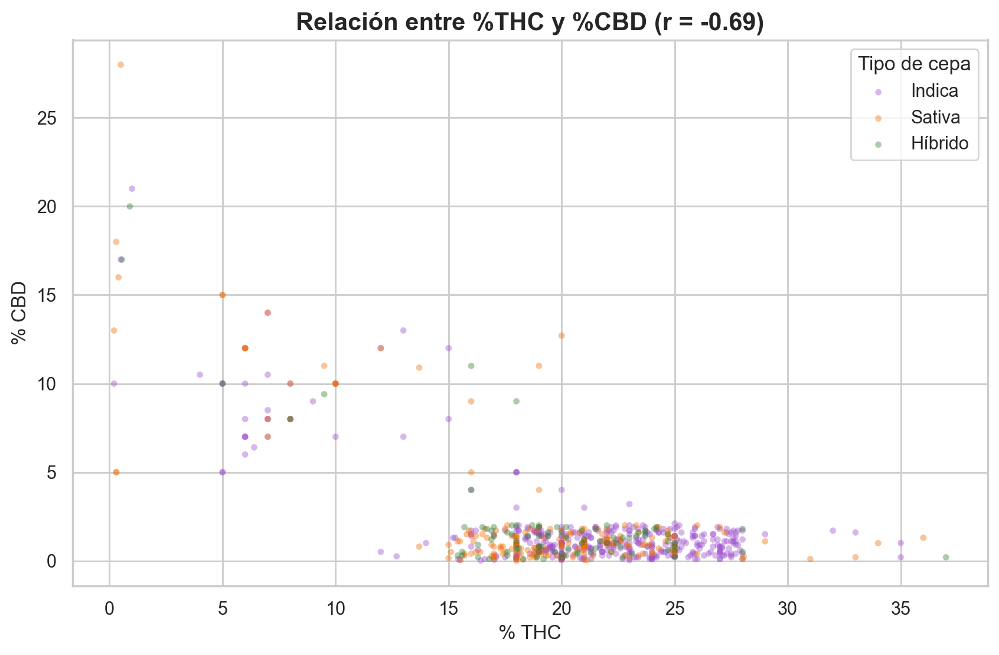
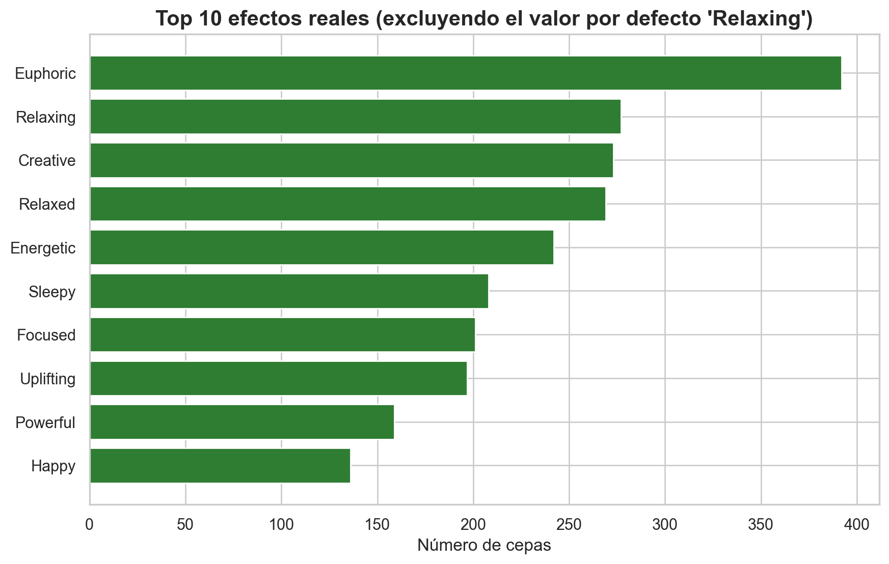
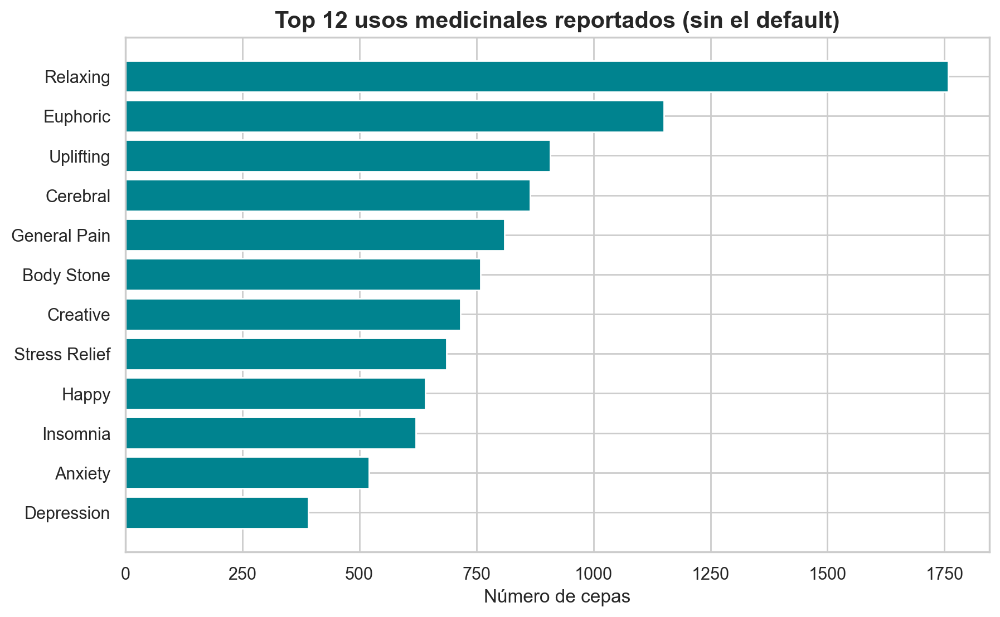
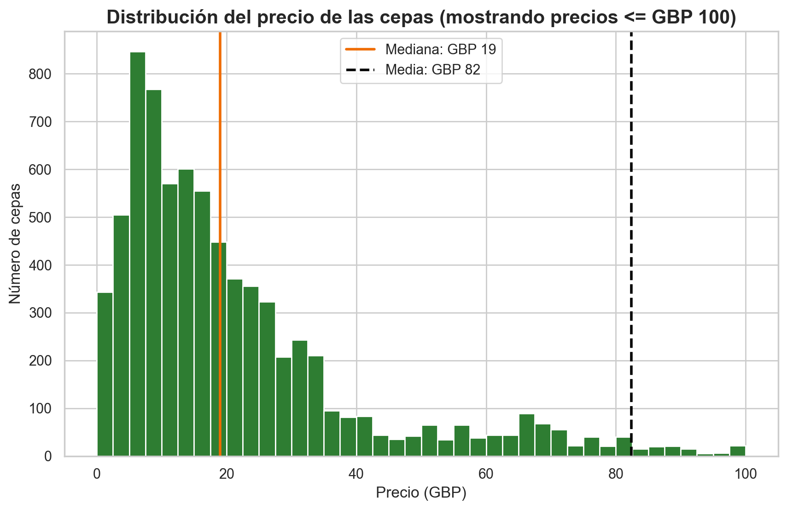
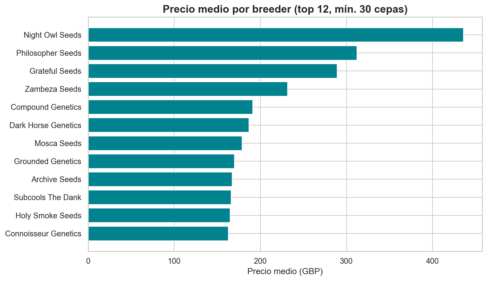

Un recorrido por 8.910 cepas de cannabis desde dos miradas —la química-medicinal y la del mercado— y una lección incómoda: la mayor parte de estos "datos" es relleno automático.
Este proyecto empezó como un análisis "de manual": distribuciones, correlaciones, gráficos bonitos. Pero al mirar de cerca —no solo ejecutar el código— apareció la verdadera historia del dataset. La cuento en tres actos.
El dataset presume de 0% de valores nulos. Suena perfecto, y es justo lo que debería dispararte las alarmas. Al contar los valores exactos de cada columna, aparece el patrón: el scraper que extrajo estos datos rellenó lo que no encontró con un valor por defecto.

El 69% de las cepas dice tener exactamente 20% de THC; el 84% describe su CBD solo como «Low»; el 76% lista «Relaxing» como único efecto. No son coincidencias: son relleno. El trabajo del analista es separar la señal del relleno antes de sacar cualquier promedio.
Un informe que ignore esto reportaría "las cepas tienen ~20% de THC de media" —un dato bonito y falso. Todo lo que sigue analiza únicamente la porción de datos que resiste ese filtro.
Trabajando solo con los valores fiables, el catálogo se revela orientado al efecto psicoactivo: THC alto y CBD bajo en casi todas las cepas. El tipo Indica/Sativa/Híbrido apenas mueve la potencia (la Indica es ligeramente más fuerte, pero es una tendencia, no una regla).

THC y CBD mantienen una relación moderada y negativa (r = −0,69): una cepa suele ser «de THC» o «de CBD», rara vez ambas. Encaja con la biología —ambos compuestos compiten por el mismo precursor químico— pero recuerda: correlación no es causalidad.

Tras descartar el efecto por defecto «Relaxing», los efectos reales dibujan dos familias: energizantes (eufórico, creativo, enérgico) y sedantes (somnoliento, relajado, calmante).

La columna de usos medicinales es la que más conecta con la biomedicina. Entre el ruido asoman condiciones clínicas reales, y coinciden con la evidencia sobre cannabis terapéutico: dolor, estrés, insomnio, ansiedad y depresión.

La cepa típica cuesta £19 (mediana), pero la media se dispara a £82 por unas pocas premium de hasta £999: una distribución fuertemente sesgada donde la mediana es la medida honesta.

¿Y qué explica el precio? La intuición dice "más THC, más caro". Los datos dicen que no: las correlaciones entre precio y química son casi nulas. Lo que sí manda es el breeder: de £11 de media (Victory Seeds) a £436 (Night Owl Seeds), unas 40 veces de diferencia.

Pagar más no garantiza una cepa más potente. En este catálogo, el precio responde al prestigio de la marca, no a la calidad química declarada.
Es un catálogo comercial de semillas de alta potencia y bajo CBD, con datos muy imputados, donde el precio responde al prestigio de la marca más que a la química declarada.